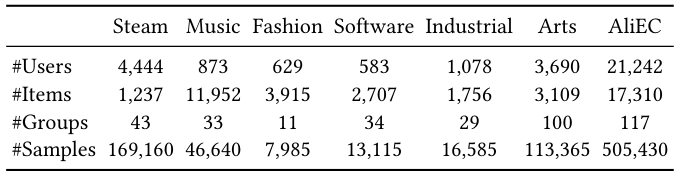
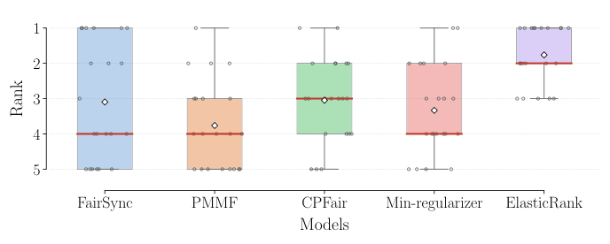
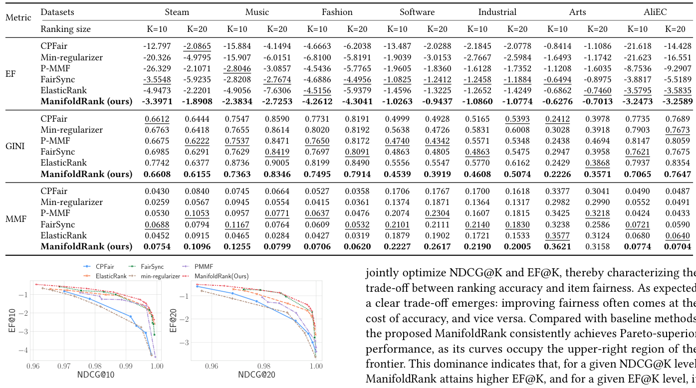
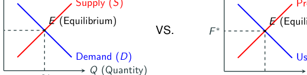

The Attention Market: Interpreting Online Fair Re-ranking as Manifold Optimization under Walrasian Equilibrium (注意力市场：将在线公平重排解释为瓦尔拉斯均衡下的流形优化)
- 会议/期刊: SIGIR 2026
- 推荐链路定位: 重排 (Re-ranking)
- 研究方向: 去偏公平与工业架构 / 多任务学习与列表级重排
- 论文原文: https://arxiv.org/abs/2604.25577v1
- 开源代码: https://github.com/XuChen0427/FairDiverse（集成于 FairDiverse 工具包）
TL;DR (核心速览)
针对在线公平重排方法在跨数据集/跨基座模型时性能极不一致的痛点，本文用注意力经济学的瓦尔拉斯均衡重新解释公平重排，证明求均衡等价于在排序流形上做梯度下降，并提出 ManifoldRank：供给侧用公平函数给出梯度方向、需求侧用排序分数的熵与偏度预测梯度步长。在 7 个数据集、3 个基座模型、Full-Ranking 协议下稳定超越 FairSync/PMMF/CPFair/ElasticRank 等基线。
Background & Motivation (背景与动机)
- 领域背景与主流范式: 公平重排（fair re-ranking）在信息检索中用于扶持长尾物品、增强组内多样性。工业系统受严格延迟约束，故主流采用在线范式：用在线梯度下降根据历史交互动态调整排序分数（P-MMF、ElasticRank、CPFair 等）。
- 现有方法局限 (Limitations of Prior Work):
- 评估覆盖面窄：既有工作往往只在少数数据集或单一基座模型上验证，结论稳健性存疑。
- 性能高度不一致：作者在 20+ 种设置（7 个数据集 × 3 个基座模型，每种设置调参 50+ 次扫描精度-公平权衡系数）上系统评测，发现现有在线方法排名剧烈波动（见图 1 箱线图），缺乏一致性。
- 忽视优化几何：现有在线方法"ranking-score-free"，只关注公平约束本身，未考虑由排序分数所构造的优化流形的几何性质。
- 核心挑战 (Key Challenge): 为什么简单的公平正则或贪心调整无法解决？因为不同重排设置会诱导出不同的流形几何，进而决定梯度景观与优化轨迹；忽略几何结构，同一算法在不同环境下的梯度步长失配，导致性能漂移。
- 核心洞察与切入点 (Key Insight): 作者借注意力经济学，将用户满意度视为市场需求、提供者公平视为税收成本、重排分数视为均衡价格（见表 1、图 2 的类比）。在此框架下，求瓦尔拉斯均衡等价于在排序流形上做梯度下降。进一步做序数回归分析发现：排序分数矩阵的熵与偏度与梯度步长强相关，故可用这两个统计量作为流形几何的代理变量来校准梯度幅度。
Problem Formulation & Method (问题定义与方法架构)
1. 符号定义与输入表征 (Notations & Input Representations)
- 用户集 \(\mathcal{U}\)、物品集 \(\mathcal{I}\)；每个物品 \(i\in\mathcal{I}\) 属于唯一组 \(g\in\mathcal{G}\)，组 \(g\) 内物品集记为 \(\mathcal{I}_g\)。
- 用户 \(u\) 访问时生成候选列表 \(L_K(u)\)，含排序分数 \(s_{u,i}\)（由 DMF、SASRec 等基座模型预计算），\(K\) 为列表长度。
- 二元决策变量 \(x_{u,i}\in\{0,1\}\) 表示物品 \(i\) 是否展示给用户 \(u\)。
- 组效用与用户效用： $\(\boldsymbol{v}_g=\sum_{u\in\mathcal{U}}\sum_{i\in L(u)}x_{u,i}\cdot s_{u,i}\cdot\mathbb{I}(i\in\mathcal{I}_g),\quad \boldsymbol{w}_u=\sum_{i\in L(u)}x_{u,i}\cdot s_{u,i}.\)$
- 公平重排目标：在 \(\boldsymbol{v}_r\approx\boldsymbol{v}_p,\ \forall r,p\in\mathcal{G}\) 约束下最大化总用户效用 \(\sum_u \boldsymbol{w}_u\)。
2. 整体流水线 (Overall Architecture)
数据流：基座排序模型产出候选列表与分数 \(s_{u,i}\) → 供给侧由公平函数 \(r(v_g)\) 计算梯度方向 \(\eta_g\) → 需求侧由分数矩阵的熵/偏度预测梯度步长 \(\zeta\) → 二者相乘得到有效公平分数 \(\eta_g\cdot\zeta\) → 在候选集上做 top-\(K\) 选择 → 更新累计组效用 \(\boldsymbol{v}_g\)，进入下一用户。
flowchart TD
A["输入层: 基座模型排序分数 s_{u,i} 与候选列表 L_K(u)"] --> B["供给侧: 公平函数 r(v_g) 求梯度方向 η_g"]
A --> C["需求侧: 排序分数熵/偏度预测步长 ζ"]
B --> D["有效公平分数 η_g · ζ"]
C --> D
D --> E["在线 top-K 重排: argmax Σ(s_{u,i} - η_g·ζ)"]
E --> F["更新累计组效用 v_g"]
F --> B3. 核心模块设计与数学原理 (Key Designs & Formulations)
(1) 注意力市场建模与瓦尔拉斯均衡（第 4.1–4.3 节）
- 需求侧：用户以有限注意力预算（最多看 \(K\) 个）最大化效用，公平分数 \(f_g\) 充当"注意力价格"： $\(X_d=\arg\max_{x_{u,i}\in\mathcal{X}}\sum_{i\in\mathcal{I}}\big(\underbrace{s_{u,i}}_{\text{排序分数}}-\underbrace{f_g}_{\text{注意力价格}}\big)x_{u,i}.\)$ 定理 1（需求定律）证明 \(\partial X^d_g/\partial f_g\le 0\)。
- 供给侧：提供者按价格生产注意力，公平惩罚 \(r(v_g)\) 充当"税收成本"： $\(X_s=\arg\max_{x_{u,i}\in\mathcal{X}}\sum_{u}\sum_{i\in\mathcal{I}_g}\big(\underbrace{f_g}_{\text{获得注意力的价格}}x_{u,i}-\underbrace{r(v_g)}_{\text{税收成本}}\big).\)$ 其中税收函数定义为 $\(r(v_g)=\mathrm{sign}(\alpha\beta)\,v_g^{\beta}\Big(\sum_{g}v_g^{\beta}\Big)^{\alpha-1},\)$ \(\alpha\) 为全局税率、\(\beta\) 为局部税率。定理 2 证明其满足税收要求（边际税率非负），定理 3 给出供给定律 \(\partial X^s_g/\partial f_g\ge 0\)。
- 均衡：定理 4 证明（\(r'(v)\) 凸时）公平重排目标 \(\max\sum_u w_u-r'(v)\) 等价于 \(\max\sum_u\sum_i(s_{u,i}-f_g^*)x_{u,i}\)，且当 \(\sum_g X^d_g(f^*)=\sum_g X^s_g(f^*)=|\mathcal{U}|K\) 时分配为帕累托最优；定理 5 进一步说明公平目标等价于单一税收机制（对"富"组征税、对"穷"组补贴）。表 2 表明该税收形式可统一泛化 max-min、\(p\)-norm、弹性公平、\(\alpha\)-fairness、比例公平等多种公平度量。
(2) 排序流形与梯度调整（第 4.4 节 + 算法 1）
将可行市场状态建模为光滑流形 $\(\mathcal{M}=\{f\in\mathbb{R}^{|\mathcal{G}|}\mid \sum_g X^d_g(f)=\sum_g X^s_g(f)\},\)$ 在流形上做梯度下降受两侧约束：供给侧由 \((\alpha,\beta)\) 决定，需求侧由排序分数属性 \(s_{u,i}\) 决定。ManifoldRank 据此设计两项梯度调整：
- 供给侧梯度方向（公平需求驱动）： $\(\eta_g=c\,r(v_g)^{\beta}\Big(\frac{1}{v_g}+(\alpha-1)\frac{v_g^{\beta-1}}{G}\Big),\quad G=\sum_j x_j^{\beta},\)$ 其中 \(c_g=\mathrm{sign}\big((\alpha-1)\beta v_g^{\beta}+(\beta-1)(\sum_i v_g^{\beta})\big)\) 为有效方向。
- 需求侧梯度步长（流形几何驱动）： $\(\zeta=a_e\,\mathrm{Entropy}(s)-a_s\,\mathrm{Skew}(s),\)$ 由排序分数矩阵的熵与偏度线性组合预测，\(a_e,a_s>0\) 为可调系数。
- 最终重排：\(L_K(u)=\arg\max_{S\in\mathcal{I}^K}\sum_{i\in S}(s_{u,i}-\eta_g\cdot\zeta)\)，随后更新 \(\boldsymbol{v}_g\)。
物理直觉：\(\eta_g\) 决定"往哪个方向走"以逼近均衡价格，\(\zeta\) 决定"走多大步"以贴合当前流形几何；二者相乘即把经济均衡的梯度投影到排序流形上。
4. 训练目标、负采样与推理复杂度 (Optimization, Negative Sampling & Complexity)
- 损失函数: 本文为在线无梯度训练的重排算法，不涉及神经网络反向传播与 BPR/InfoNCE 类损失。其"目标函数"即约束优化 \(\max_{x}\sum_u w_u\) s.t. \(\boldsymbol{v}_r\approx\boldsymbol{v}_p\)，通过算法 1 的在线梯度调整迭代求解；公平函数 \(r'(v)\) 由 \((\alpha,\beta)\) 参数化（表 2 给出各公平度量的 \((\alpha,\beta)\) 对应）。
- 训练负采样策略: 不适用（无对比学习/无负采样；候选集为基座模型给出的 top-\(K\) 列表）。
- 时间与空间复杂度: 每个用户仅需 \(O(|\mathcal{G}|)\) 计算梯度方向与步长，再做一次 top-\(K\) 选择（\(O(K\log K)\) 或 \(O(|\mathcal{I}^K|)\) 视实现），无需离线混合整数规划（对比离线方法 MILP 的高开销），满足在线延迟约束。原文未报告具体 ms/request 与峰值显存数值。
Experimental Setup & Evaluation Protocol (实验设置与评估协议)
- 数据集统计与预处理: 使用 7 个公开排序数据集，其中 5 个为 Amazon 子集（Music、Fashion、Software、Industrial、Arts），另加 2 个数据集（原文表 3 给出统计量，正文未逐项列出数值，此处不臆造）：

| 数据集 (Dataset) | 用户数 (#Users) | 物品数 (#Items) | 交互数 (#Interactions) | 稀疏度/密度 (Sparsity) | 模态/辅助特征说明 |
|---|---|---|---|---|---|
| Amazon Music / Fashion / Software / Industrial / Arts | 原文表 3 报告 | 原文表 3 报告 | 原文表 3 报告 | 原文表 3 报告 | 物品按组划分用于公平约束 |
| 其余 2 个数据集 | 原文表 3 报告 | 原文表 3 报告 | 原文表 3 报告 | 原文表 3 报告 | 同上 |
- 数据划分方式 (Splitting Strategy): 原文正文未明确说明 LOO / Ratio / 时间戳切分细节（属重排任务，候选列表由基座模型 DMF、SASRec 生成）；需查阅原文实验节确认，本文不臆断。
- 排名评测协议 (Ranking Protocol): 重排阶段在基座模型给出的候选列表 \(L_K(u)\) 上操作，属列表级重排评估；基座排序模型（DMF、SASRec、以及第三个基座）的召回/排序评估协议原文未在正文展开。
- 评价指标与显著性检验: 同时报告精度与公平性指标（具体指标名原文正文未逐项列出，表 4 标题注明"tuned various re-ranking models to achieve accuracy performances"，即在精度对齐条件下比较公平性）。原文未报告配对显著性检验（如 \(p<0.05\)）细节。
Key Experimental Results (核心实验结果)
1. 主实验对比 (Main Results)
表 4 在 7 个数据集上对比 ManifoldRank 与 FairSync、PMMF、CPFair、Min-regularizer、ElasticRank 等基线，并在精度对齐条件下比较公平性表现：

| 数据集 | 指标 | 传统/协同过滤基线 | 序列/图/多模态最强基线 | 本文方法 (Ours) | 相对提升 (Improv.) |
|---|---|---|---|---|---|
| Amazon Music / Fashion / Software / Industrial / Arts 等 7 个数据集 | 精度对齐下的公平性指标 | FairSync / PMMF / CPFair / Min-regularizer / ElasticRank | 同左（最强基线） | ManifoldRank | 原文表 4 报告（正文未给出具体百分比，不臆造） |
图 1 给出 20+ 设置下各在线公平重排方法的排名分布（越低越好），显示现有方法排名波动大，而 ManifoldRank 在多数设置下排名靠前：

2. 消融实验与控制变量分析 (Ablation Study)
原文正文未提供独立的消融表格；从方法结构看，两项梯度调整（供给侧 \(\eta_g\) 与需求侧 \(\zeta\)）是核心贡献，但正文未报告"去掉 \(\zeta\) 仅用 \(\eta_g\)"或"去掉 \(\eta_g\) 仅用 \(\zeta\)"的定量消融数值。原文未报告该部分，需查阅附录/补充材料确认。
3. 稀疏度/冷启动分桶与超参敏感度 (Sparsity Buckets & Hyperparameters)
- 用户/物品交互频次分桶表现: 原文未报告长尾/冷启动分桶实验。
- 关键超参数敏感度: 核心超参为全局税率 \(\alpha\)、局部税率 \(\beta\)（决定公平度量类型，见表 2）以及需求侧系数 \(a_e,a_s\)。图 3 给出 Amazon Industrial 与 Scientific 域在 SASRec 基座下、不同列表规模 \(K\) 的帕累托前沿，展示精度-公平权衡随 \(K\) 的变化：

- 线上 A/B 测试结果 (Online A/B Test): 原文仅包含离线实验，未报告线上 A/B 测试。
Highlights, Limitations & Critiques (亮点、局限与审稿级批判)
- 核心亮点与可迁移性:
- 理论统一性强：用瓦尔拉斯均衡 + 流形优化把"公平即税收"的直觉上升为严格数学等价（定理 4、5），并证明税收函数 \(r(v_g)\) 可泛化 max-min、\(p\)-norm、弹性公平、\(\alpha\)-fairness、比例公平等多种度量（表 2），具有很好的可迁移性。
- 需求侧几何代理变量：用排序分数的熵与偏度预测梯度步长，是一个轻量且可复用的"流形几何感知"技巧，可迁移到其他在线重排/多目标重排场景。
- 工程友好：每用户 \(O(|\mathcal{G}|)\) 开销，无需 MILP，适合在线部署；代码集成于 FairDiverse 工具包，复现成本低。
- 局限性与审稿视角批判 (Critical Limitations):
- 评估协议细节缺失：正文未明确数据划分方式、具体精度/公平指标名称、显著性检验，削弱了实验可复现性与结论强度。
- 消融不充分：两项梯度调整的独立贡献未定量拆解，难以判断哪一项是性能主因。
- 需求侧代理变量的理论依据偏弱：\(\zeta=a_e\mathrm{Entropy}(s)-a_s\mathrm{Skew}(s)\) 来自序数回归的经验观察，缺乏对流形几何的严格刻画，泛化到分布差异极大的场景时可能失效。
- 无线上验证：作为面向工业在线场景的方法，缺少真实系统的延迟与业务指标（CTR/留存）验证。
- 公平度量依赖组划分：物品需属于唯一组 \(g\)，对多属性/重叠分组场景的扩展性未讨论。
Rating (四维评分)
- 方法创新性 (Novelty): ⭐⭐⭐⭐（经济学均衡与流形优化的严格等价是有新意的理论贡献）
- 评估协议与实验扎实度 (Protocol & Experiments): ⭐⭐⭐（覆盖 7 数据集 × 3 基座 × 20+ 设置较广，但划分/指标/显著性细节缺失，消融不足）
- 写作与数学规范度 (Clarity & Rigor): ⭐⭐⭐⭐（定理链条完整、类比清晰，但部分证明置于附录、正文符号略密）
- 工业落地与复现价值 (Industrial & Practical Value): ⭐⭐⭐⭐（在线 \(O(|\mathcal{G}|)\) 复杂度、代码开源集成 FairDiverse，落地友好；缺线上验证扣分）
论文图表

